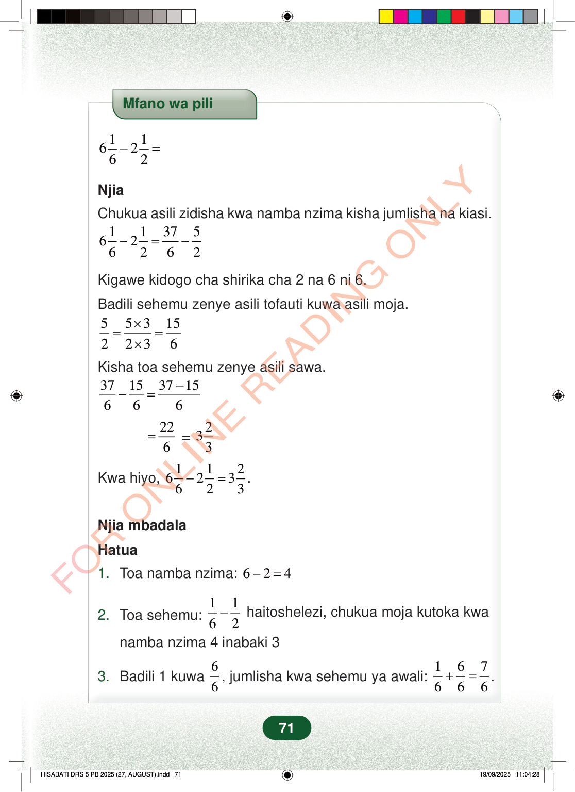

Mfano wa pili116262−=NjiaChukua asili zidisha kwa namba nzima kisha jumlisha na kiasi.11375626262−=−Kigawe kidogo cha shirika cha 2 na 6 ni 6.Badili sehemu zenye asili tofauti kuwa asili moja.553152236×==×Kisha toa sehemu zenye asili sawa.37153715666−−==226=233Kwa hiyo,112623623−=.Njia mbadalaHatua1.Toa namba nzima:624−=haitoshelezi, chukua moja kutoka kwa2.Toa sehemu:1162−namba nzima 4 inabaki 33.Badili 1 kuwa66, jumlisha kwa sehemu ya awali:167666+=.71
Mfano wa pili
1 1 6 2 6 2 − =
Njia
Chukua asili zidisha kwa namba nzima kisha jumlisha na kiasi.
1 1 37 5 6 2 6 2 6 2 − = −
Kigawe kidogo cha shirika cha 2 na 6 ni 6.
Badili sehemu zenye asili tofauti kuwa asili moja.
5 5 3 15 2 2 3 6 × = = ×
Kisha toa sehemu zenye asili sawa.
37 15 37 15 6 6 6 − − =
22 6 =
2 33
Kwa hiyo,
1 1 2 6 2 3 6 2 3 − = .
Njia mbadala
Hatua
1. Toa namba nzima: 6 2 4 − =
haitoshelezi, chukua moja kutoka kwa
2. Toa sehemu: 1 1 6 2 −
namba nzima 4 inabaki 3
3. Badili 1 kuwa 6 6 , jumlisha kwa sehemu ya awali: 1 6 7 6 6 6 + = .
71
Mfano wa pili unaonyesha hesabu 6 na 1 juu ya 6 ukitoa 2 na 1 juu ya 2. Chini yake kuna neno Njia.Mfano wa pili<math><mrow><mn>6</mn><mfrac><mn>1</mn><mn>6</mn></mfrac><mo>−</mo><mn>2</mn><mfrac><mn>1</mn><mn>2</mn></mfrac><mo>=</mo></mrow></math>NjiaChukua asili zidisha kwa namba nzima kisha jumlisha na kiasi.<math><mrow><mn>6</mn><mfrac><mn>1</mn><mn>6</mn></mfrac><mo>−</mo><mn>2</mn><mfrac><mn>1</mn><mn>2</mn></mfrac><mo>=</mo><mfrac><mn>37</mn><mn>6</mn></mfrac><mo>−</mo><mfrac><mn>5</mn><mn>2</mn></mfrac></mrow></math>Kigawe kidogo cha shirika cha 2 na 6 ni 6.Badili sehemu zenye asili tofauti kuwa asili moja.<math><mrow><mfrac><mn>5</mn><mn>2</mn></mfrac><mo>=</mo><mfrac><mrow><mn>5</mn><mo>×</mo><mn>3</mn></mrow><mrow><mn>2</mn><mo>×</mo><mn>3</mn></mrow></mfrac><mo>=</mo><mfrac><mn>15</mn><mn>6</mn></mfrac></mrow></math>Kisha toa sehemu zenye asili sawa.<math><mrow><mfrac><mn>37</mn><mn>6</mn></mfrac><mo>−</mo><mfrac><mn>15</mn><mn>6</mn></mfrac><mo>=</mo><mfrac><mrow><mn>37</mn><mo>−</mo><mn>15</mn></mrow><mn>6</mn></mfrac></mrow></math><math><mrow><mo>=</mo><mfrac><mn>22</mn><mn>6</mn></mfrac><mo>=</mo><mn>3</mn><mfrac><mn>2</mn><mn>3</mn></mfrac></mrow></math>Kwa hiyo,<math><mrow><mn>6</mn><mfrac><mn>1</mn><mn>6</mn></mfrac><mo>−</mo><mn>2</mn><mfrac><mn>1</mn><mn>2</mn></mfrac><mo>=</mo><mn>3</mn><mfrac><mn>2</mn><mn>3</mn></mfrac><mi>.</mi></mrow></math>Njia mbadalaHatua1.Toa namba nzima: <math><mrow><mn>6</mn><mo>−</mo><mn>2</mn><mo>=</mo><mn>4</mn></mrow></math>2.Toa sehemu:<math><mrow><mfrac><mn>1</mn><mn>6</mn></mfrac><mo>−</mo><mfrac><mn>1</mn><mn>2</mn></mfrac></mrow></math>haitoshelezi, chukua moja kutoka kwa namba nzima 4 inabaki 33.Badili 1 kuwa<math><mfrac><mn>6</mn><mn>6</mn></mfrac></math>, jumlisha kwa sehemu ya awali:<math><mrow><mfrac><mn>1</mn><mn>6</mn></mfrac><mo>+</mo><mfrac><mn>6</mn><mn>6</mn></mfrac><mo>=</mo><mfrac><mn>7</mn><mn>6</mn></mfrac><mi>.</mi></mrow></math>